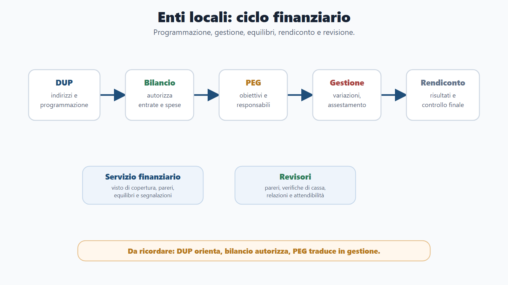
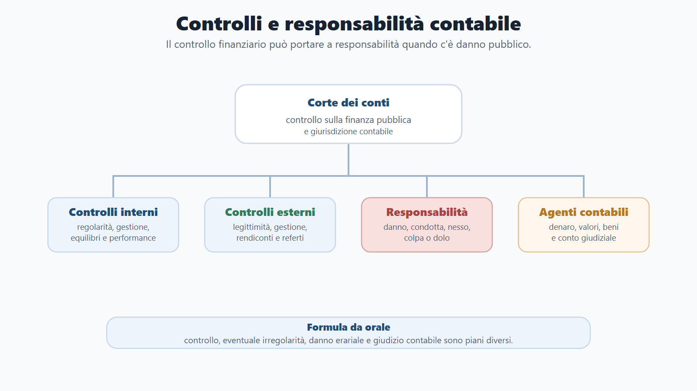
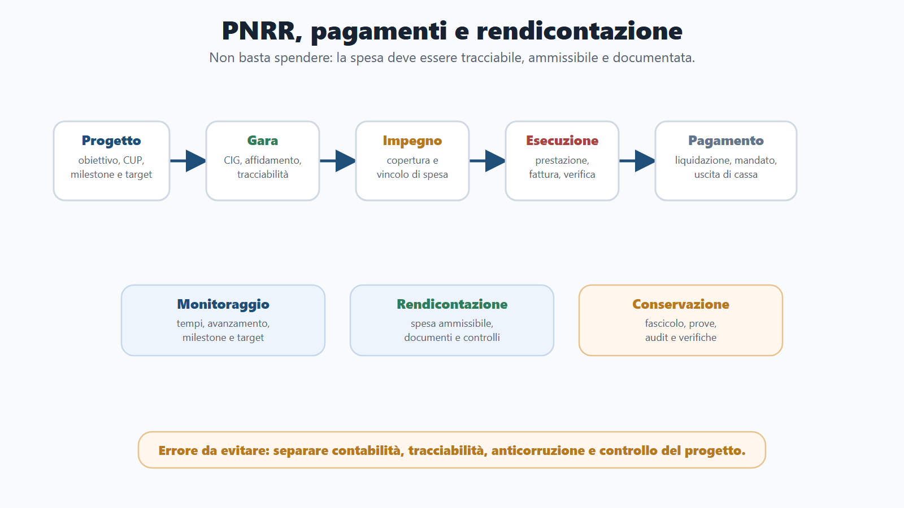
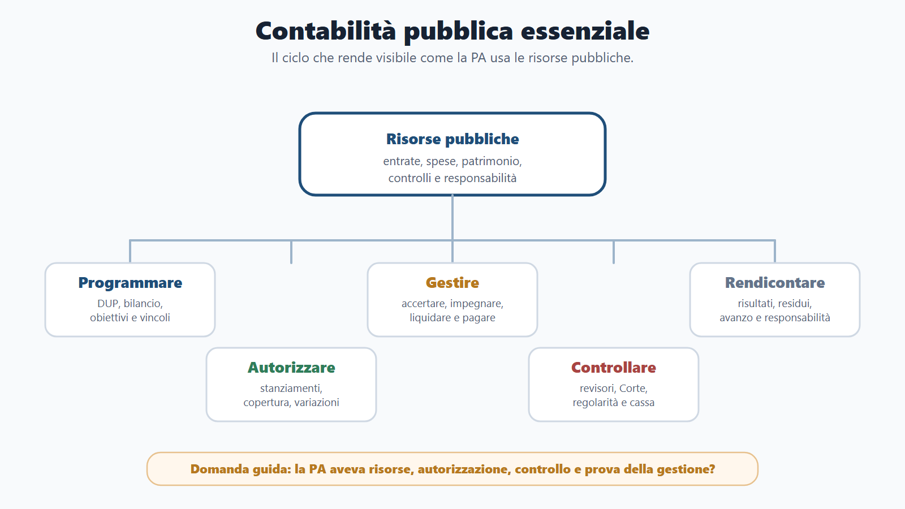
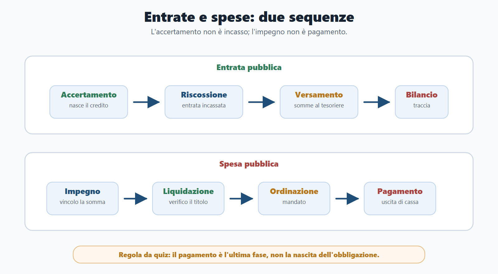
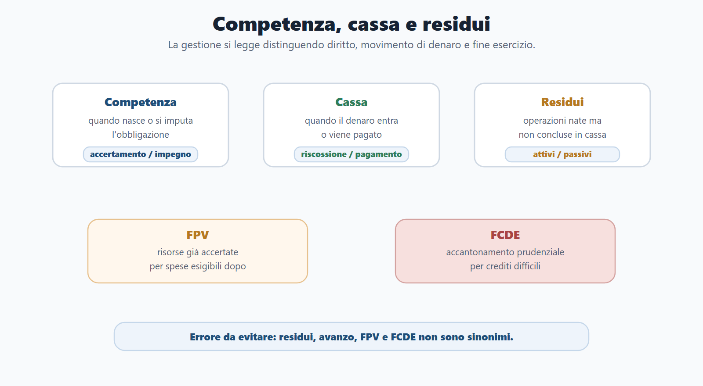

VOL-01 · Capitolo 08
Parte II · Materie comuni
Contabilità pubblica
essenziale
Mostra come la PA usa le risorse. Non è solo materia da ragionieri: riguarda chi propone un acquisto, gestisce un procedimento con effetti di spesa, firma un atto, partecipa a un progetto PNRR o risponde su bilanci, pagamenti e responsabilità. Le domande verificano distinzioni, non sempre calcoli complessi.
Schema
Ciclo enti locali

Schema
Controlli corte responsabilita

Schema
Pnrr pagamenti rendicontazione

Schema
Contabilita pubblica mappa

Schema
Ciclo entrate spese

Schema
Competenza cassa residui

01 · Il ciclo
Prevedere, impegnare, pagare, rendicontare, controllare
Una risorsa viene prevista, accertata, riscossa, destinata; una spesa viene programmata, impegnata, liquidata, ordinata, pagata; alla fine la gestione viene rendicontata e, se vi sono irregolarità o danni, può generare responsabilità. La corretta gestione contabile è una condizione del buon andamento, non una formalità.
Principi
Artt. 81, 97 e 119 Cost.: equilibrio, copertura, sostenibilità del debito, autonomia territoriale coordinata.
Gestione
Bilancio e rendiconto; fasi di entrata e spesa; competenza e cassa; residui, FPV, FCDE.
Controllo
Interni, revisori, Corte dei conti, agenti contabili, tracciabilità, PNRR.
02 · BANDO
Come usare questo capitolo sul bando
| Come usarlo | Errore da diario | |
|---|---|---|
| B — Bando | Cerca contabilità pubblica, bilancio, entrate, spese, rendiconto, Corte dei conti, responsabilità erariale, enti locali, armonizzazione, DUP, PEG, pagamenti, PNRR. | Studiare solo lo Stato o solo il Comune. |
| A — Aree | Collega a costituzionale, amministrativo, enti locali, contratti, responsabilità, trasparenza, pubblico impiego. | Isolare i numeri dalla legalità finanziaria. |
| N — Nuclei | Prima principi e ciclo; poi fasi; quindi controlli, responsabilità, enti locali, armonizzazione, pagamenti e PNRR. | Memorizzare sigle senza funzione. |
| D — Diario | Impegno/pagamento, competenza/cassa, bilancio/rendiconto, FPV/avanzo, CIG/CUP. | Le coppie che decidono i quiz. |
| O — Output | Mappa del ciclo, tabella entrate/spese, caso su acquisto comunale, orale sulla Corte dei conti, schema PNRR. | Glossario senza sequenza. |
03 · Principi e fonti
Equilibrio, non «pareggio» detto a sentimento
Art. 81: bilancio, equilibrio, copertura, limiti all’indebitamento; ogni legge con nuovi o maggiori oneri indica i mezzi. Art. 97: equilibrio dei bilanci e sostenibilità del debito dentro l’organizzazione amministrativa. Art. 119: autonomia finanziaria di Comuni, Province, Città metropolitane e Regioni, entro il coordinamento della finanza pubblica; indebitamento, in linea generale, per investimenti. L. cost. 1/2012 e l. 243/2012.
| Livello | Fonti da riconoscere |
|---|---|
| Stato | R.D. 2440/1923 e R.D. 827/1924; L. 196/2009 e riforme successive del bilancio. |
| Enti territoriali | D.Lgs. 118/2011 (e 126/2014) e TUEL: armonizzazione per rendere confrontabili i dati. |
| Altri enti | D.Lgs. 91/2011; università: D.Lgs. 18/2012. «Pubblico» non significa sempre TUEL. |
04 · Bilancio e rendiconto
Uno autorizza il futuro, l’altro dimostra che cosa è avvenuto
Il bilancio dello Stato è documento di autorizzazione e rappresentazione. La legge di bilancio approva la manovra e autorizza la gestione. Missioni: grandi finalità; programmi: aree operative; capitoli: gestione; stati di previsione: amministrazioni. Assestamento e variazioni adeguano le previsioni in corso d’esercizio. Confondere bilancio e rendiconto è uno degli errori più frequenti.
| Documento | Funzione |
|---|---|
| Bilancio di previsione | Autorizza entrate e spese future. Non «rendiconta». |
| Rendiconto | Chiude il ciclo e documenta la gestione compiuta. Per lo Stato: rendiconto generale e parificazione della Corte dei conti. |
| Conto del bilancio | Gestione finanziaria di entrate e spese. |
| Conto economico / stato patrimoniale | Componenti economici; attività, passività, patrimonio netto. |
| Risultato di amministrazione | Sintesi dell’esito finanziario secondo le regole dell’ente. Non è il residuo passivo. |
05 · Entrate e spese
Due sequenze da non invertire
L’accertamento non coincide con l’incasso: è la nascita contabile del credito (ragione, debitore, importo, scadenza). L’impegno viene prima della liquidazione; il pagamento è l’ultima fase. Se una risposta identifica il pagamento come nascita dell’obbligazione, è sbagliata. La prenotazione di impegno è un vincolo provvisorio, non l’impegno definitivo.
Entrate
Accertamento: credito, debitore, importo, scadenza. Riscossione: versamento al soggetto incaricato o alla tesoreria. Versamento: le somme confluiscono nelle casse dell’ente. Tributarie, extratributarie, trasferimenti, alienazioni, prestiti: natura e vincoli diversi.
Spese
Impegno: vincola una somma disponibile per un’obbligazione perfezionata o nei casi previsti. Liquidazione: prestazione eseguita, credito certo, liquido ed esigibile. Ordinazione: mandato al tesoriere. Pagamento: uscita di cassa che estingue l’obbligazione.
06 · Competenza, cassa, residui
Il residuo passivo non è un avanzo
La competenza guarda all’imputazione giuridico-contabile all’esercizio. La cassa guarda ai movimenti effettivi di denaro. Non sono sinonimi. Il riaccertamento verifica se i residui possono restare in bilancio, per non conservare crediti non esigibili o debiti non più dovuti.
| Termine | Significato | Non confondere con |
|---|---|---|
| Residuo attivo | Entrata accertata e non riscossa entro la chiusura. | Avanzo di amministrazione. |
| Residuo passivo | Spesa impegnata e non pagata entro la chiusura. | Avanzo; è ancora un debito di spesa. |
| FPV | Fondo pluriennale vincolato: risorse già accertate collegate a spese esigibili in esercizi futuri. | Avanzo libero. Riguarda il tempo della spesa. |
| FCDE | Fondo crediti di dubbia esigibilità: accantonamento prudenziale. | Perdita già realizzata. Riguarda la prudenza sulle entrate. |
Il residuo passivo è un avanzo di amministrazione? No. Il residuo passivo è una spesa impegnata e non pagata. L’avanzo è un risultato complessivo della gestione finanziaria. Sono concetti diversi.
07 · Enti locali e armonizzazione
DUP, bilancio, PEG, salvaguardia, rendiconto
Il D.Lgs. 118/2011 rende i bilanci confrontabili: schemi comuni, principi, piano dei conti, competenza finanziaria potenziata (imputazione all’esercizio di esigibilità), contabilità economico-patrimoniale, bilancio consolidato dove previsto. Negli enti armonizzati non basta «quando nasce l’obbligazione?»: serve anche «quando diventa esigibile?».
DUP
Indirizzi strategici e operativi. Precede e orienta il bilancio.
Bilancio e PEG
Autorizza entrate e spese. Il PEG assegna obiettivi e risorse ai responsabili.
Gestione e chiusura
Variazioni, assestamento, salvaguardia degli equilibri; rendiconto; revisori.
Il responsabile del servizio finanziario presidia gli equilibri, esprime pareri di regolarità contabile quando dovuti, appone il visto di copertura sugli atti di spesa e segnala criticità. Entrate vincolate: usarle per altre finalità può generare irregolarità e responsabilità. Dissesto e riequilibrio pluriennale sono rimedi straordinari, non gestione ordinaria.
08 · Controlli e Corte dei conti
Non è solo «il giudice del danno erariale»
Controlli interni: regolarità amministrativa e contabile; controllo di gestione (efficienza, efficacia, economicità); controllo strategico. L’organo di revisione locale rilascia pareri sul bilancio, relazioni sul rendiconto, verifiche su cassa ed equilibri: non sostituisce organi politici né responsabili gestionali.
| Funzione della Corte | Che cosa è |
|---|---|
| Controllo preventivo di legittimità | Visto e registrazione sugli atti nei casi previsti. |
| Controllo successivo sulla gestione | Uso delle risorse, risultati, efficienza, economicità: non solo validità formale. |
| Parificazione e referti | Controllo sul rendiconto; comunicazione a Parlamento o organi rappresentativi. |
| Giudizi di responsabilità e di conto | Danno erariale; resa del conto dell’agente contabile. Sezioni regionali di controllo. |
09 · Responsabilità ed agenti
Maneggio di denaro, beni o valori: si rende il conto
La responsabilità erariale riguarda il danno alle finanze pubbliche da soggetti in rapporto di servizio (o nel perimetro previsto): condotta, danno, nesso causale, elemento soggettivo. Di regola dolo o colpa grave. Può coesistere con disciplinare, civile e penale, con presupposti diversi. Non riguarda solo i dirigenti.
Agente contabile
Di diritto, se formalmente incaricato, o di fatto, se gestisce risorse senza regolare investitura. Cassieri, tesorieri, economi, consegnatari, agenti della riscossione, secondo le funzioni effettive. L’economo comunale del fondo per minute spese documenta entrate, uscite, giustificativi e rimanenze. Non è «qualunque dipendente».
Patrimonio ed economato
La contabilità riguarda anche beni e valori: inventari, custodia, consegnatari. Perdita, uso improprio, mancata inventariazione o omessa resa del conto non sono errori solo formali. Tesoreria e SIOPE: liquidità e monitoraggio degli incassi e pagamenti. Anticipazioni di tesoreria: esigenze temporanee di cassa, non copertura stabile.
10 · CIG, CUP, PNRR
Identificativo del contratto e identificativo del progetto
Il CIG identifica procedura o contratto ai fini di tracciabilità e monitoraggio (L. 136/2010). Il CUP identifica un progetto di investimento pubblico. Confonderli è un errore frequente. La fatturazione elettronica incide su ricezione e gestione; la liquidazione verifica titolo, prestazione, importo e adempimenti; i pagamenti rispettano tempi e regole sui debiti commerciali.
| PNRR / fondi UE | Che cosa aggiungere alla spesa «ordinaria» |
|---|---|
| Monitoraggio finanziario | Avanzamento della spesa, non solo la fattura. |
| Milestone e target | Traguardi qualitativi o procedurali; risultati quantitativi misurabili. |
| Rendicontazione | Dimostrazione documentale di spesa e risultati; vincoli di destinazione. |
| Catena | Progetto, CUP, eventuale gara e CIG, impegno, esecuzione, fattura, liquidazione, pagamento, monitoraggio, conservazione. |
11 · Caso guidato
Acquisto comunale di manutenzione software
Dieci passaggi, nello stesso ordine in cui la spesa deve essere verificabile. Se il servizio fosse PNRR o UE, si aggiungerebbero vincoli di destinazione, monitoraggio, milestone/target e rendicontazione specifica.
| Passaggio | |
|---|---|
| 1-3 | Esigenza coerente con la programmazione; disponibilità nello stanziamento; atto di affidamento con copertura e impegno. |
| 4-6 | CIG se dovuto; CUP se progetto di investimento; esecuzione e fattura elettronica; verifica della prestazione. |
| 7-10 | Liquidazione (titolo, importo, documenti); ordinazione con mandato; pagamento del tesoriere; ingresso nella gestione da rendicontare e da controllare (revisori, interni, Corte dei conti). |
12 · Mini-esercizio
Vero, falso, e la correzione in una riga
| Affermazione | Correzione |
|---|---|
| Il pagamento è la prima fase della spesa. | Falso: impegno, liquidazione, ordinazione, pagamento. |
| Il DUP orienta il bilancio dell’ente locale. | Vero. |
| Il CIG identifica un progetto di investimento. | Falso: quella è la funzione del CUP; il CIG identifica procedura o contratto. |
| Il FCDE tutela gli equilibri rispetto a crediti di dubbia riscossione. | Vero: è prudenza sulle entrate, non una perdita già realizzata. |
| Il rendiconto generale dello Stato apre il ciclo di bilancio. | Falso: chiude e documenta la gestione svolta. |
| La responsabilità erariale riguarda solo i dirigenti. | Falso: dipende dal rapporto di servizio e dai presupposti del danno. |
13 · Verifica
Due domande da saper spiegare
Impegno, liquidazione, ordinazione, pagamento
L’impegno vincola una somma disponibile in bilancio a fronte di un’obbligazione o di una spesa nei casi previsti. La liquidazione verifica che il creditore abbia titolo, che la prestazione sia eseguita e che l’importo sia certo, liquido ed esigibile. L’ordinazione dispone al tesoriere o cassiere di pagare, di regola con mandato. Il pagamento è l’uscita effettiva di cassa che estingue l’obbligazione.
Il residuo passivo è un avanzo?
No. Il residuo passivo è una spesa impegnata e non pagata entro la chiusura dell’esercizio. L’avanzo di amministrazione è un risultato complessivo della gestione finanziaria, determinato secondo le regole applicabili. Stessa famiglia di errori: CIG come se fosse CUP; bilancio che «rendiconta»; impegno coincidente con pagamento.
14 · Da tenere ferme
Cinque regole, con il perché
1. La contabilità pubblica programma, autorizza, gestisce, controlla e rendiconta le risorse. Perché è condizione di buon andamento, non tecnica isolata.
2. Il bilancio di previsione guarda al futuro; il rendiconto verifica la gestione compiuta. Perché confonderli ribalta l’intero ciclo.
3. Entrate: accertamento, riscossione, versamento. Spese: impegno, liquidazione, ordinazione, pagamento. Perché l’ordine delle fasi è la domanda da quiz.
4. Negli enti locali sono centrali DUP, bilancio, PEG, salvaguardia, rendiconto, revisori e D.Lgs. 118/2011. Perché le regole statali non si applicano in automatico.
5. Corte dei conti, agenti contabili, CIG/CUP e PNRR completano il ciclo. Perché tracciabilità e resa del conto rendono la spesa verificabile.
Prossimo capitolo
Contratti pubblici essenziali
Dalla copertura finanziaria al ciclo del contratto: fabbisogno, procedura, RUP, aggiudicazione, esecuzione, CIG, MEPA e controlli. La gara è una fase, non tutto.